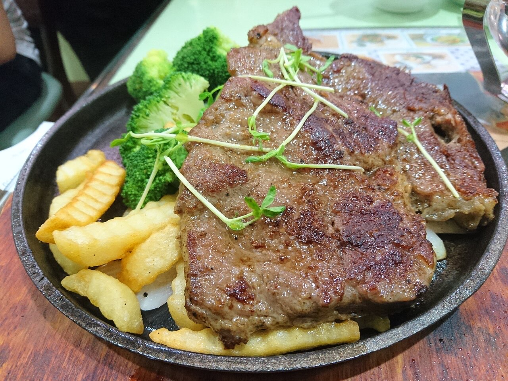

Fotografias ilustrativas — no site final usamos as vossas.
Cozinha tradicional portuguesa · Serzedelo
Tasca bem avaliada em Serzedelo
Mesa simples e conversa à vontade, à portuguesa.
4,6★ em 219 avaliações no Google.
Ligue ou escreva por WhatsApp antes de vir.
A Tasca do Pereira é uma casa de cozinha tradicional portuguesa na Rua do Formigal, em Serzedelo. Venha almoçar à moda de tasca, com 4,6★ no Google.

Fotografias ilustrativas — no site final usamos as vossas.
Pedido de reserva
Escolha o dia e a hora — o pedido chega por WhatsApp e confirmamos logo.
↑ Assim chegaria a mensagem ao vosso WhatsApp. (Nesta demonstração nada é enviado.)
Onde estamos
Proposta para Tasca do Pereira
Esta página foi feita de propósito para Tasca do Pereira por João Machado, programador web aqui de Guimarães. Inclui:
Eu trato do alojamento e da manutenção. Sem compromisso.